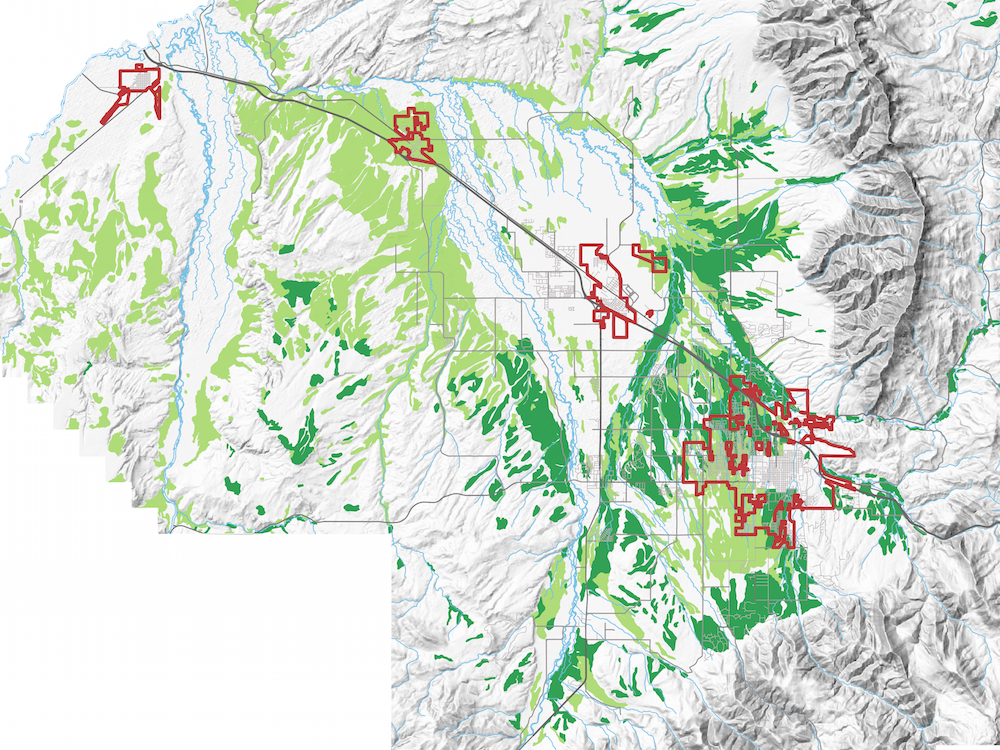
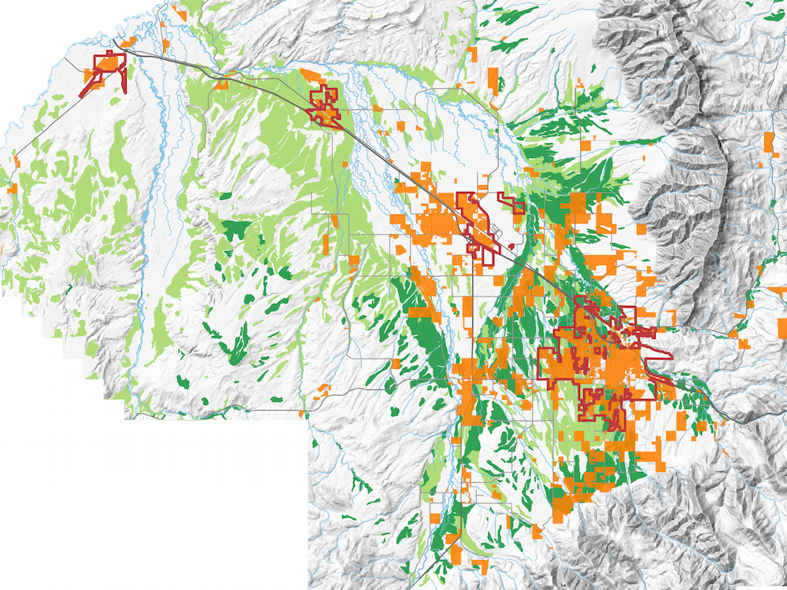
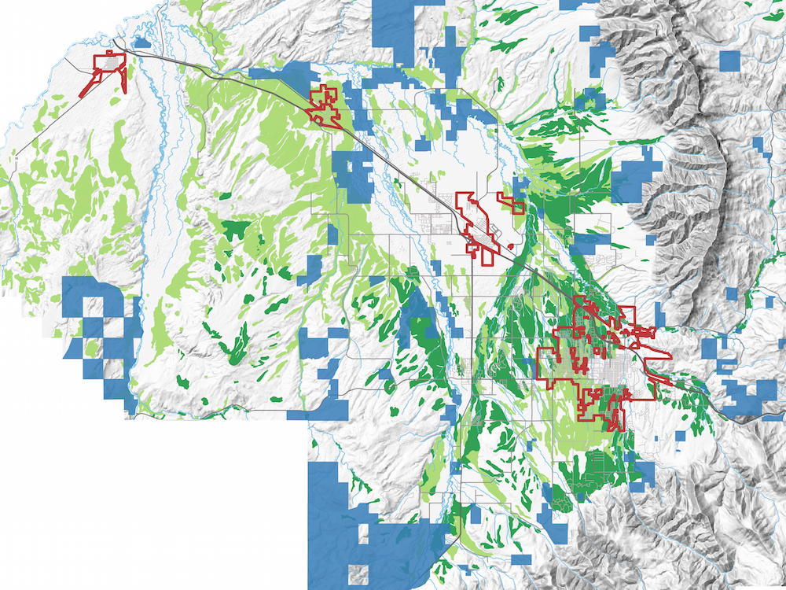

There are more than 123,000 acres of federally designated prime farmland the Gallatin Valley — much of that in regions under heavy development pressure from rapidly growing cities.
NRCS-designated prime farmland shown in dark green, and farmland considered prime if irrigated shown in light green. Town and city boundaries (from left: Three Forks, Manhattan, Belgrade and Bozeman) are outlined in dark red.
Prime farmland shown with currently platted subdivisions, a proxy for development (in orange).
Prime farmland shown with portions of the valley currently protected by conservation easements (in blue).
Soil data from the U.S. Dept. of Agriculture Natural Resources Conservation Service. Hillshade and conservation easement data from the Montana State Library. Subdivision, road, city limit and watercourse data from Gallatin County.